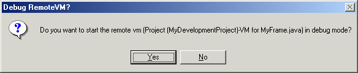
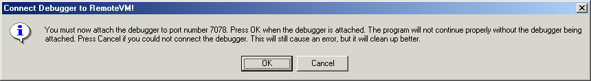
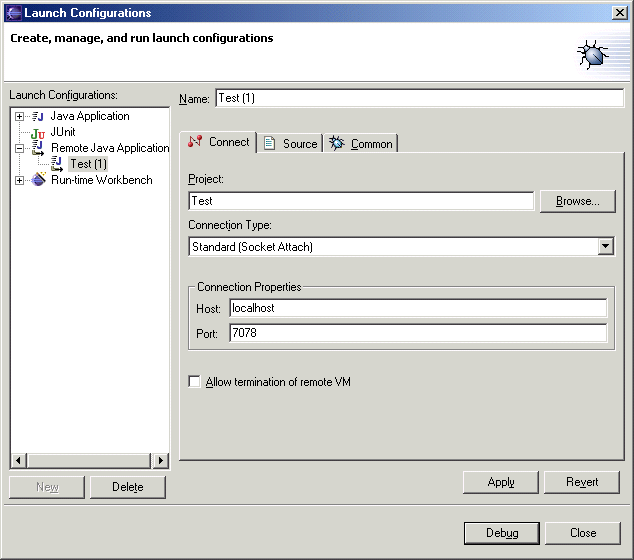

During normal development you should not need to be concerned withthe VM that is used by each visual editor instance. Advanced users, however,can configure the workbench so that any messages sent to System.out or System.err ofthe VM are written to the .log file in the .metadata directoryin your workspace.
The virtual machine (VM) that is used to execute the Java beans is notthe same VM that the workbench is running within. A separate VM is createdfor each instance of the visual editor. The class path of this VM is set tobe the entries in the Java build path for the project. If while the visualeditor is open the Java build path is changed any open editors must be closedand re-opened to reflect the updated build path.
When the workbench is started it can be given a -DEBUG option that pointsto a text file:
-DEBUG file:/c:/temp/options.txt
The debug file contains entries that are read by the visual editor. Ifthe file contains the following line then any messages sent to System.out or System.err areshown in the console:
org.eclipse.jem.proxy/remote/debug/vmtraceout=true
In addition to having console output shown from the VM used by the visualeditor you can start it in debug mode and perform remote debugging. This scenariois not optimized and may change in future versions of the visual editor. However,it is documented in case you need to perform debugging of your Java beansat design time. To perform remote debugging you will need two workbenchesrunning: one with the Java beans that you want to debug, and one that canperform socket based remote debugging. The second workbench could be runningon the same machine or a different machine. To enable debugging of the visualeditor's VM, the -DEBUG file should contain the line:
org.eclipse.jem.proxy/remote/debug/debugvm=true
Each time the visual editor starts a VM it will ask you whether you wantit to be started in debug mode or not.

The previous dialog is for when the class HelloFrame.java inthe project Test is opened with the visual editor . If you select Yes, orenter Y and press Enter in the console, then the VM is started in suspendmode with the -Xdebug using a socket connector.A free port is allocated. Then, you are told its number.

The next step is to attach a remote debugger to port number 7078. The instanceof the workbench that is running the visual editor is suspended while theremote debugger attaches, so you must use a debugger from another application.If the other application is another instance of the workbench, you can beginremote debugging by using the menu option Debug > Debug andcreating a new Remote Java Application configuration.

Enter the port number that was previously written to stdout, in this case7078. If the debugger is on a different machine, in the Host fieldyou should enter the IP address of the machine running the workbench thatis being debugged. To begin the remote debugger, click Debug andthen enter y in the stdin console of the workbenchbeing debugged.
In addition to being prompted to debug the VM used by each instance ofthe visual editor , you will see messages that prompt you to debug the projectitself:
Do you want to start the remote vm (Project (Test)-Beaninfo)in debug mode? (Enter Y or N):
This is for the VM that is used for introspection and the java.beans.Introspector isrun in, and can be distinguished from the VM for the visual editor becauseit does not specify a particular Java source file name. This VM is startedthe first time any bean info is required for a Java bean within a project,and remains active as long as the project remains open. By debugging thisproject you can step through and analyze any code in your BeanInfo classesas your Java beans are being introspected. Introspection occurs once for eachJava bean class for each project it is used in. The result is held in a cacheto help performance. If at any time you need to clear the cache of BeanInfoinformation held for a project you can close and open theproject from its pop-up menu.